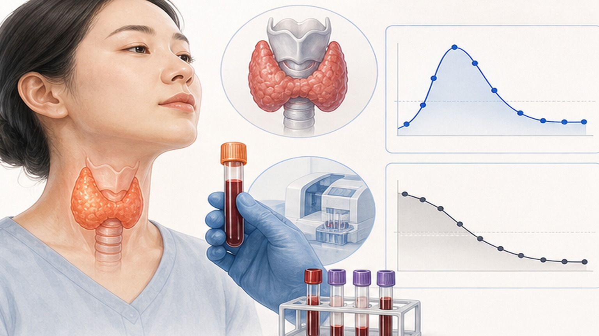
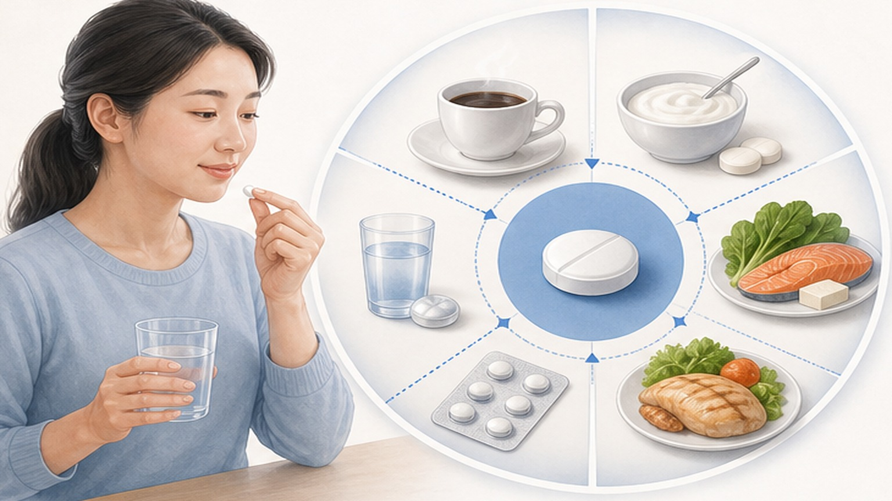
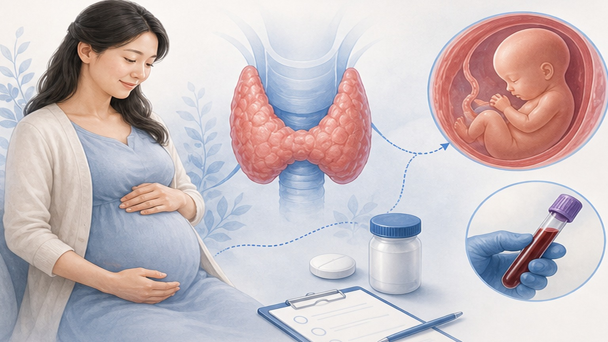

갑상선기능저하증,
올바른 치료와 관리로 건강한 삶을
갑상선기능저하증 (Hypothyroidism) — 호르몬 부족으로 대사가 느려지는 상태, 꾸준한 복약과 정기 추적이 핵심입니다
갑상선기능저하증 (Hypothyroidism) 이란
갑상선 호르몬이 부족하여 몸의 대사가 느려지는 상태입니다
(한국 성인)
유병률
높은 발생률
주요 증상 (Symptoms)
갑상선 호르몬이 부족하면 몸 전체의 대사가 느려져 다양한 증상이 나타납니다
진단 과정 (Workup)
혈액검사를 통해 단계적으로 진단합니다 — 한국 정상범위는 서구와 다릅니다

레보티록신 (Levothyroxine, LT4) 복용법
갑상선 호르몬을 보충하는 표준 치료 — 모든 주요 가이드라인(ATA·ETA·KTA·NICE)의 1차 치료입니다
아침 공복에 물과 함께 복용하고, 식사는 30~60분 후에 시작하세요.
취침 시 (마지막 식사 후 3시간 경과)에 복용하는 방법도 흡수가 동등합니다. 효과 발현은 단계적으로 — 경미한 호전은 약 2주, 뚜렷한 개선은 6주, 완전 안정화는 12주가 걸립니다. 적절한 호르몬 보충 시 예후가 매우 양호하며 정상적인 일상생활이 가능합니다.
약물·식품 상호작용
레보티록신 흡수에 영향을 주는 약물·식품과의 간격을 지켜주세요

추적 관찰 (Follow-up)
정기적인 검사로 적절한 호르몬 수준을 유지합니다 — LT4 반감기 약 7일, 정상 도달 약 35일 (5 반감기)
무증상 갑상선기능저하증 (SCH) 치료 결정
나이와 TSH 수준에 따라 치료 여부를 결정합니다 (KTA 2023 기준)
70세 미만 + TSH > 10이면 LT4 치료 권고, 70세 이상은 개별화 판단이 원칙입니다.
TSH 6.8~10 (한국 기준) 경도 무증상은 유증상·TPOAb 양성 시 6개월 시범 치료를 고려하고, 무증상이면 관찰합니다. 70세 이상은 KTA: 일반적 비권고 — 과잉 치료 시 심방세동·골다공증 위험이 있습니다. 자연 경과 참고: 65세 이상은 4년 내 46% 자연 회복, TPOAb 양성 시 연 4.3% / 음성 시 연 2.6% 현성 진행.
임신과 갑상선기능저하증
임신 전후 갑상선 관리는 태아 발달에 매우 중요합니다 — TSH 목표가 일반보다 낮습니다

식이 관련 주의사항 — O / X 가이드
한국인의 요오드 섭취는 WHO 권장 대비 2~5배 — 일반인은 해조류 제한이 불필요합니다
- 일반 해조류 섭취 — 김·미역·다시마 (제한 불필요)
- 산후 미역국 섭취 (전통대로 OK)
- 조리된 십자화과 채소 — 브로콜리·양배추
- 일상적 식사량의 채소·과일 (영향 없음)
- 균형 잡힌 단백질·지방·탄수화물
- 꾸준한 LT4 복용 + 정기 TSH 추적
- 다시마 농축액 과량 섭취 (특히 하시모토 환자)
- 요오드 보충제 (한국 식단에서 추가 불필요)
- 셀레늄 보충제 (ATA·ETA 공식 권고 없음)
- "천연 갑상선 추출물" 자가 복용
- 의사 상의 없이 T3 단독·병용 추가
- 처방 없이 임의로 LT4 용량 조정
오늘 꼭 기억할 핵심 8가지
갑상선기능저하증은 호르몬 보충으로 잘 관리되는 질환입니다 — 꾸준한 복약과 정기 추적이 핵심
올바른 치료와 관리로
건강한 일상을 유지하세요
꾸준한 복약 + 정기적인 TSH 추적 = 건강한 일상 — 궁금한 점은 언제든 문의해 주세요
광교중앙로 298, 4층
토요일 08:30~13:30
같은 자료를 다시 볼 수 있어요